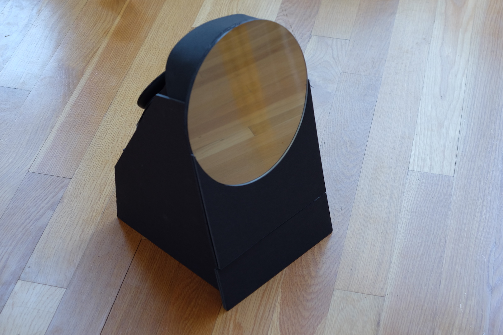
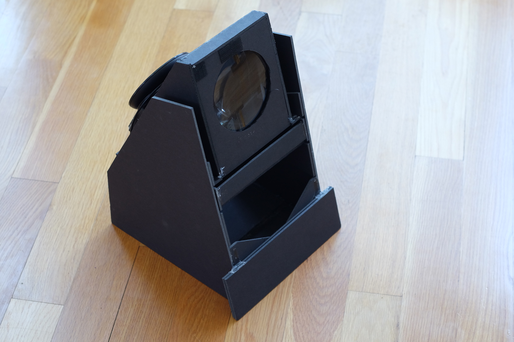
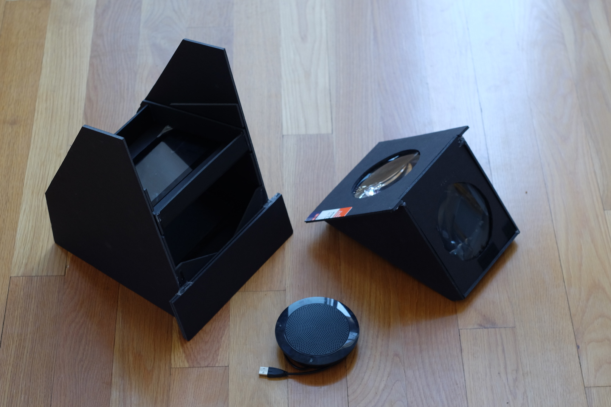

Nokia purchased the Withings brand in 2016 and prior to the purchase withings co-founder Cedric Hutchings asked our design team to explore some product concepts to expand the family of smart health devices that Withings had developed. The concept of a Smart Mirror was proposed to the design and engineering team. I volunteered to research the idea and create some interactive prototypes.
I started the project by researching the market at the time for all existing Smart Mirror products and projects. At the time there were very few commercial products available to the consumer and a multitude of hobbyist projects online. Generally these devices consisted of an LCD panel mounted behind a semi transparent piece of glass or plastic with user interactions varying from basic informational display (weather) to touch and voice interaction.
During my research I discovered a number of drawbacks to the conventional or state of the art Smart Mirror It is difficult to see the display behind the semi-transparent mirror in a bright room If the Smart Mirrors primary interaction involves touch, the mirror becomes dirty with fingerprints very quickly There is a limited palette of color, text and line width that can be seen through the semi-transparent mirror in daylight The user can view the either the mirror or the reflected image at one time due to the limited depth of field of the human eye A typical mirror has varying width, height and shape but it has little depth
I found that the first three problems could be designed around. The last two would be much more difficult to solve.
I discovered that Heads Up Displays used a semi-transparent mirrored surface in a similar method to a Smart Mirror. There are two important differences between the two. First, the intention of a Heads Up Display is to allow you to perceive information in your field of view without creating an obstruction. Second, the image that you perceive in the HUD eyebox is in focus at infinity so that it appears to be at the same distance as objects in the same focal plane. A HUD uses an optical collimator to make the screen reflecting off the mirror to appear at or near infinity.
I made the connection that the method of optical collimation used in HUDs could be applied to the Smart Mirror concept to move displayed image off the surface of the mirror and into the users field of view.
Prototype #1
In order to develop this idea further I created two prototype Smart Mirrors with collimating optics. The first prototype consisting of a box with an iPad mounted to the back of the box and a large fresnel lens laminated to the semi-transparent mirror in the front. I was able to demonstrate the concept with this device to other designers and engineers on my team. Most users reacted surprise with the UI appearing to float in space in front of the users mirrored image but found the quality of the image poor and were distracted by the prototypes physical qualities and small visible area.
Prototype #2
A second prototype was designed and created with the intent to address these issues. Higher quality materials including lenses, surfaces, mirror and display were used to improve the physical and optical characteristics. An HD display, tiny computer with audio and video input were selected to allow for more advanced interaction.

Mirror Prototype #2
A 3/4 view of the second smart mirror prototype

Behind the mirror
Behind the semi-transparent front mirror you can see the image collimation box which holds the front surface mirror and two collimating lenses. You can also see the mount for a camera that was hidden behind the mirror.

Image collimation box
Under the collimation box is an HD display and a small computer.
Conclusion
This prototype performed well, but the optics required additional physical depth to collimate the UI into the reflected image was a stopping point for this concept. Essentially: A mirror should be a plane, you should be able to mount it to a wall. Displays are flat. Another problem with this optical design is the small eye-box in comparison to the unlimited “eye-box” of the mirror.
At the time, I believed that I had created a novel invention with potential for a patent. I requested that the Nokia patent team research the patentability of my idea. They found an existing patent owned by Canon that closely related to my idea.
Near the end of exploration I discovered light field displays and their potential as a component for a new kind of Smart Mirror. Using a light field display as the projecting component could solve the depth problem and the depth of field problem at the same time. The cost, complexity and scarcity of this component prevented me from creating a physical prototype. I attempted to simulate the concept in VR using Unity and the Oculus DK2 headset.
MY ROLE
- R&D
TECH
- iOS
- UIKit
- Unity
- Cinema 4D
- VR
- Semi-transparent mirrors
- Optical Collumnation
- Oculus DK2